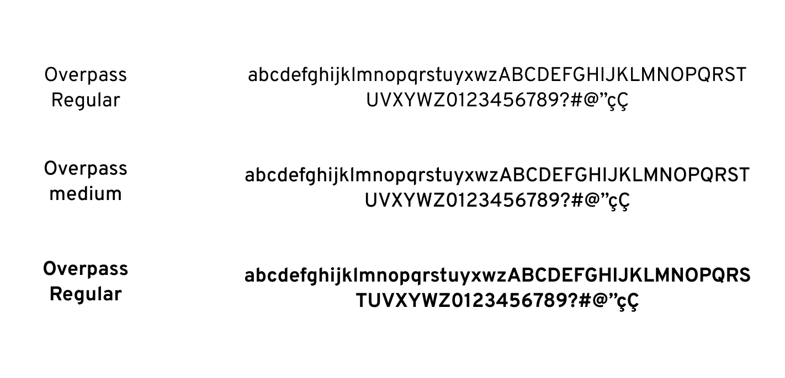
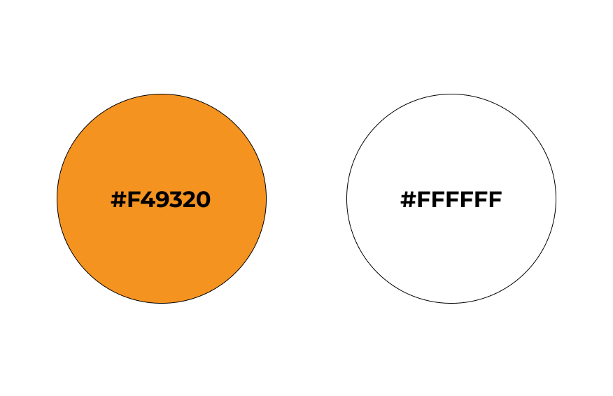
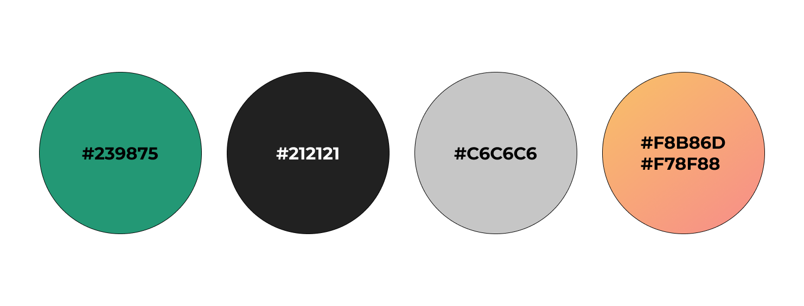

Guia de estilo
1. Introdução
O guia de estilo é um conjunto de diretrizes que estabelece padrões e regras para a escrita e apresentação de design para um produto. Tem como principal objetivo ajudar a manter a consistência na comunicação visual do projeto, aumentando a sua legibilidade, reconhecimento e memorização pelo público-alvo.
2. Logo
2.1 Logo padrão
2.2 Logo versão negativo

2.3 Logo simplificada
| Padrão | Negativo |
|---|---|
3. Estrutura dos templates
3.1 Tipografia
A principal família tipográfica definida para o projeto é a Overpass e suas variações de estilo.

3.2 Cores
Primárias

Secundárias

3.3 Ícones
Os icones utilizados na aplicação são obtidos a partir da biblioteca material-icons
4. Referências
[1] Style Guide. Disponivel em: https://aelaschool.com/designvisual/style-guide-como-desenvolver-o-guia-de-estilo-da-sua-interface/
[2] Material UI. Disponível em: https://mui.com/pt/material-ui
5. Histórico da versão
| Data | Descrição | Autor(es) |
|---|---|---|
| 01/05/2023 | Criação do documento guia de estilo | Lucas Gabriel Bezerra |
| 15/05/2023 | Revisão do documento | João Pedro |
| 23/05/2023 | Revisão do documento | Dafne Moretti |
| 24/05/2023 | Revisão do documento | Lucas Lima |